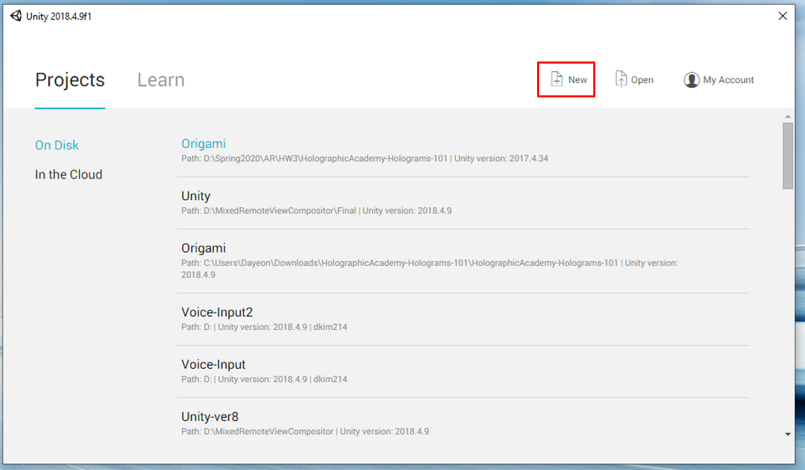
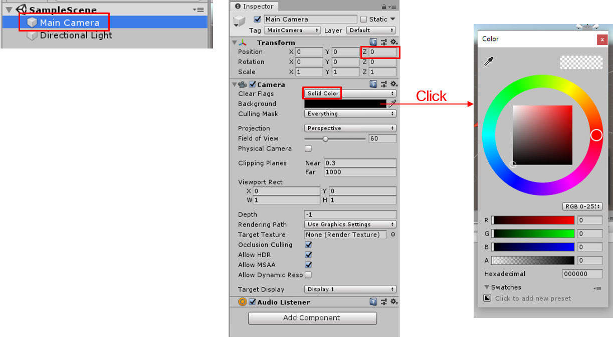
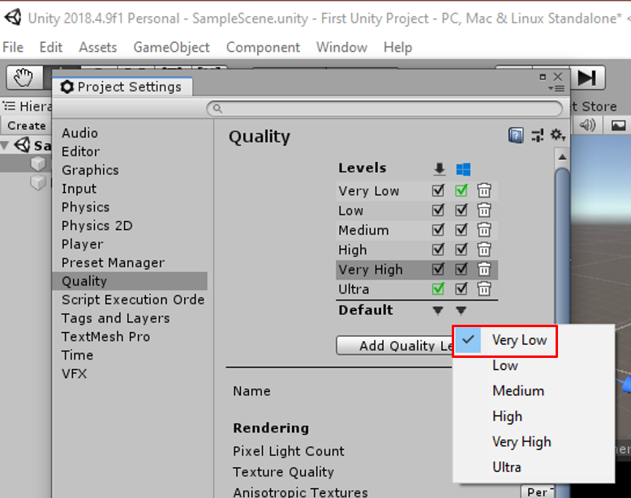
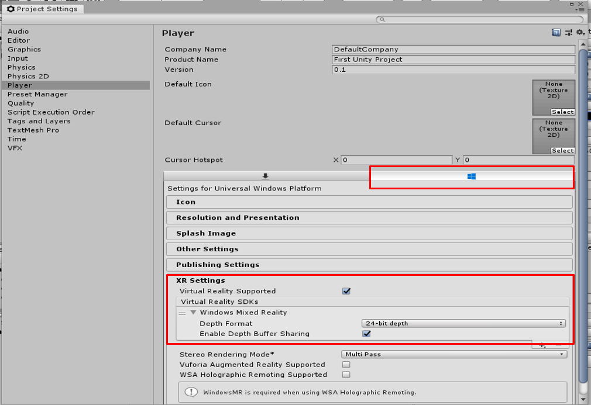
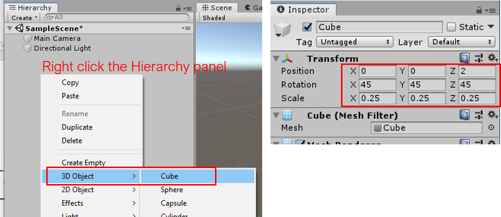
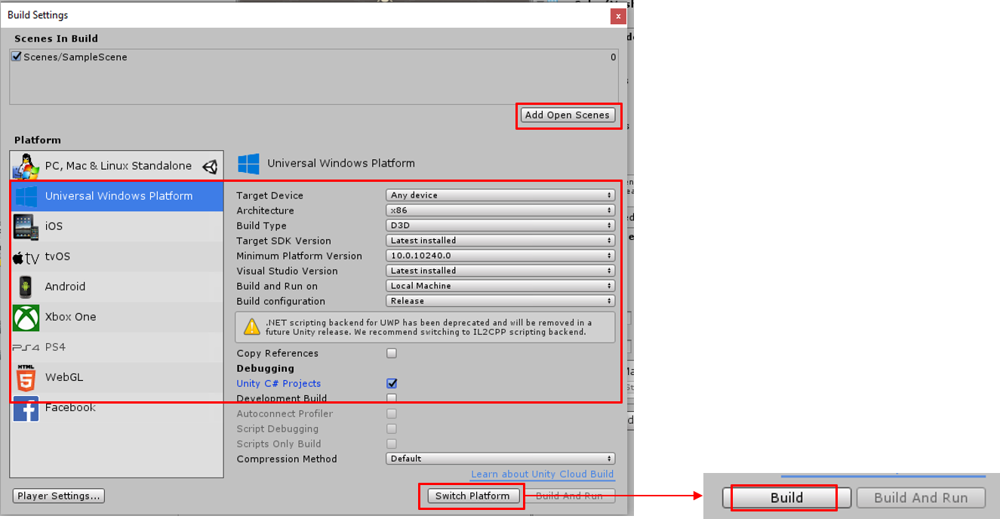
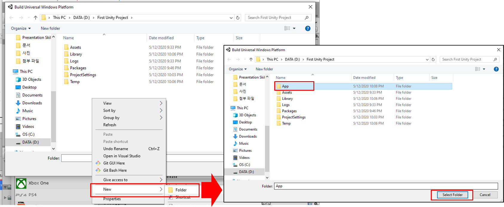
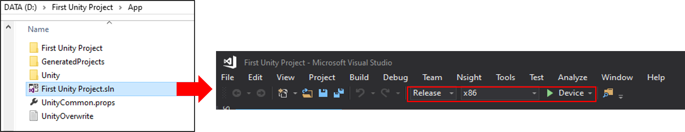
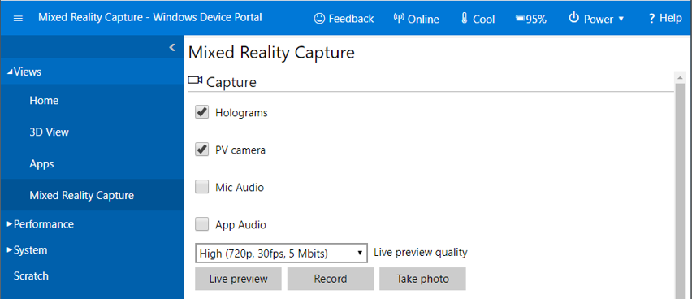

Requirements
- OS: Windows 10
- Enable developer mode & Device Portal: Go to Settings > Update & Security > For developers
- Visual Studio 2017 (Download Link)
- Installing Options: .NET desktop development, Desktop development with C++, Universal Windows Platform development
- Install the recent Windows 10 SDK (10.0.18362.0) (Download Link)
- Unity (Download Link)
- Install Unity Hub, then open the hub to install 2018.X.X LTS version by clicking the ADD button

When your computer satisfies all the requirements mentioned above, you are ready to make your first AR application!
Step 1: Create New Unity Project
Open Unity 2018 and create new unity project by clicking "New" button.  Select "3D" as the Template for new project, and assign the project name and location to whatever you want. It might take some time to create new project. There will be a default scene named "SampleScene"; you may save the scene with the different name by clicking File>Save Scene As.
Step 2: Setup the main camera
Click "Main Camera" in the scene hierarchy. In the Inspector tab, do the following.
- Under Transform, set its position to 0, 0, 0.
- Under Camera, set "Clear Flags" to "Solid Color" using the dropdown menu, then set the RGB value for background color to 0, 0, 0 (black)
Step 3: Edit Unity Project Settings
1. Quality Setting
Go to Edit>Project Settings>Quality: Under Windows icon, set its level to "Very Low" by clicking the inverted triangle in the "Default" row.
2. Player Setting
Go to Edit>Project Settings>Player: Click Windows icon to do the following works
- Under XR Settings, check "Virtual Reality Supported". Make sure "Windows Mixed Reality" is selected as Virtual Reality SDKs.
- Under Publishing Settings, there's "Capabilities" property and check any function you would like to use for your project. For example, if you are going to use spatial mapping, check "Spatial Perception".
- Under Other Settings, there's "Configuration" property. Set ".NET" as Scripting Backend (optional).
Step 4: Create Simple 3D Object to Render
In this tutorial, I just created a cube by right clicking the hierarchy panel and click 3D Object>Cube. You may choose other models to play with. Then, change its position and scale to make sure that the main camera can see the object. It is particularly important to set the depth value to the larger value than 0.85 (recommended value).
Step 5: Build the Project
Now save the scene to publish your first AR application to HoloLens.
First, click the button "Add Open Scenes" to add the scene we've made. Next, choose "Universal Windows Platform" as the Platform. If you've chosen ".NET" as your scripting backend, you need to check the box for "Unity C# Projects". Then, click "Switch Platform". You might need to wait for a while, and when "Build" button is activated, click the button to see the pop-up like the picture below.
Create the folder where you would save the built results. Here, I named the folder as "App" and selected the folder for the build.
Step 6: Deploy the Project to HoloLens
Connect your HoloLens to PC using the USB, and power on the device.
When the build is completed, VS solution file will be generated. Open the solution file to set the solution configuration to "Release", the solution platform to "x86", and the device to "Device" as you can see in the red box of the above picture.
Finally, click Build > Start Debugging. It will deploy the application to HoloLens. Wear your HoloLens to check your first AR application!
Additional Tip: How to use Device Portal
When you want to film the demonstration video for your own AR application, Windows Device Portal is a great tool for this. It has functions like live preview, recording, and taking a photo.
To use the Device Portal, you can use either USB or Wi-Fi to connect the HoloLens to the PC.
- Using USB: Enter https://127.0.0.1:10080 into your internet browser
- Using Wi-Fi: Enter https://<ip-address-of-your-hololens> into your internet browser
- You can find out the IP address of your device by going to Settings > Network & Internet > Wi-Fi > Hardware Properties
If it's your first time to use the device portal, you need to set a username and password. In your HoloLens, go to Settings>Update & Security>For developers. Then, turn on 'Use Developer Features' and 'Enable Device Portal'. When you click the "Pair" button, a PIN would pop up. Enter the PIN in the browser mentioned above to create a username and password. You would need to enter the username and password whenever you are trying to connect the HoloLens to new PC, so please write down the account information in order not to forget it.